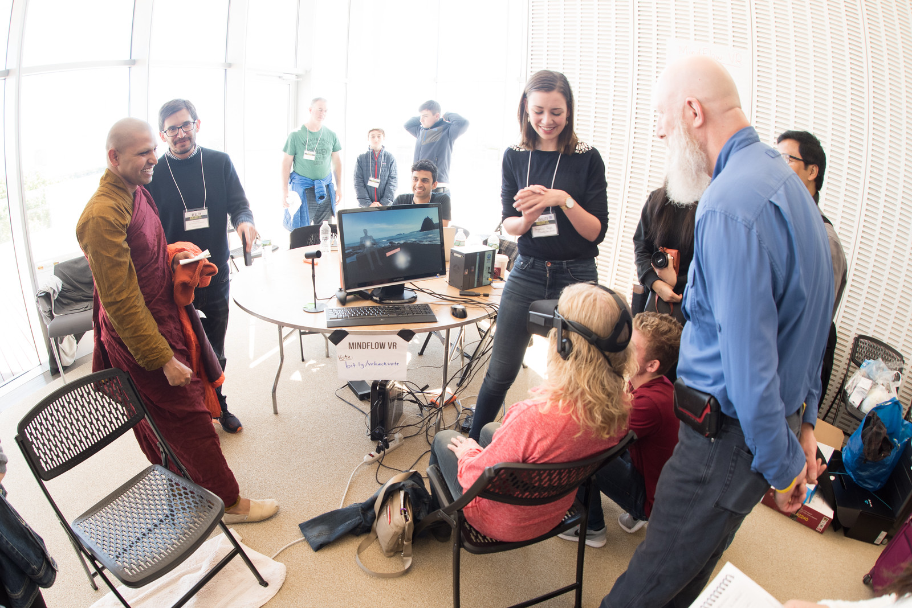

The birth control pill influences brain and behavior


In my research I’m especially interested in combining different cutting-edge techniques related to virtual reality and measuring neurophysiology to answer relevant theoretical questions in the area of psychology and cognitive science. Within the research project in which I am currently involved as a PhD candidate I focus on behavioral, cognitive and neurophysiological processes during learning and training in virtual reality.
Additionally, I am interested and have experience in research related to perception, alertness, biofeedback, linguistics, deception and anxiety.
Below you can find a list of my scientific publications. Click on the link to go to ResearchGate where you can download the article in PDF format (for the articles that are already available).
Presence is key: unlocking performance benefits of immersive virtual reality
TT de Back, R van Hoef, AM Tinga, MM Louwerse. (2018)
Proceedings of the 40th annual conference of the Cognitive Science Society.
The applicability and benefits of virtual reality for the cognitive sciences
TT de Back, AM Tinga, R van Hoef, EM Peters, MM Louwerse. (2018)
Proceedings of the 40th annual conference of the Cognitive Science Society.
Inducing circular vection with tactile stimulation encircling the waist
AM Tinga, C Jansen, MJ van der Smagt, TCW Nijboer, JBF van Erp. (2018)
Acta Psychologica, 128, 32-38.
Acute alerting effects of light: A systematic literature review
CJL Souman, AM Tinga, SF te Pas, R van Ee, BNS Vlaskamp. (2018)
Behavioural Brain Research, 337, 228-239.
Stress Enhances the Memory-Degrading Effects of Eye Movements on Emotionally Neutral Memories
M Littel, M Remijn, AM Tinga, IM Engelhard, MA van den Hout. (2017)
Clinical Psychological Science, 5(2), 316-324.
Multisensory Stimulation to Improve Low- and Higher-Level Sensory Deficits after Stroke: A Systematic Review
AM Tinga, JMA Visser-Meily, MJ van der Smagt, S Van der Stigchel, R van Ee, TCW Nijboer. (2016)
Neuropsychology Review, 26(1), 73-91.
Innovatieve Cognitieve Revalidatietechnieken Gericht Op Functieherstel Bij Hemispatieel Neglect
AM Tinga, JMA Visser-Meily, MJ van der Smagt, HC Dijkerman, TCW Nijboer. (2014)
Tijdschrift voor Neuropsychologie, 9(3), 207-223.
‘The Psychonomic Society Meeting’, IMPS (2018).
Biofeedback is less effective in meditation than comparable feedback uncoupled from physiology.
‘Alumni Masterclass in virtual and augmented reality’, Tilburg University Masterclasses (2018).
Measuring behavior and physiology in virtual reality.
‘WYSIWYG337 - The Art & Science of Virtual Reality’, Mindlabs (2018).
Virtual reality and science.
‘PhD Day’, Tilburg center for Cognition and Communication (2017).
Biofeedback is not always preferable in reducing arousal.
The birth control pill influences brain and behavior
Should we embrace stress?

The impact of smartphones on happiness

I'm on Twitter, LinkedIn and ResearchGate. Feel free to follow my updates on these pages!